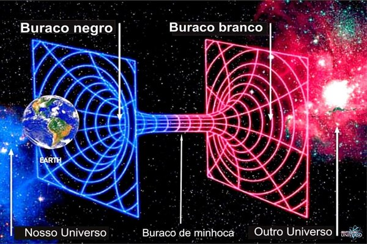

Post #1

Na relatividade geral, um buraco branco
é uma região hipotética do espaço-tempo e da singularidade que não pode ser acessada de fora, embora a energia-matéria,
luz e informação possam escapar dela. Nesse sentido, é o reverso de um buraco negro, que só pode ser penetrado por
fora e do qual a energia-matéria, a luz e a informação não podem escapar. Os buracos brancos aparecem na teoria
dos buracos negros eternos.
Quer conversar sobre o universo? Me chame clicando aqui